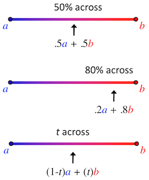

Lecture 15 Animation and Graphics
This lecture discusses some different ways to add “visual motion” (graphical animation) to Android applications. It covers 2D drawing with custom Views, Property Animations (also used in Material effects), and how to handle touch-based gestures.
This lecture references code found at https://github.com/info448-s17/lecture15-animation.
15.1 Drawing Graphics
Android provides a 2D Graphics API similar in both spirit and usage to the HTML5 Canvas API: it provides an interface by which the developer can programmatically generate 2D, raster-based images. This API can be used for drawing graphs, showing manipulated images, and even performing animations!
As in HTML5, in Android this API is available via the Canvas44 class. Similar to the HTML5 <canvas> element or the Java SE Graphics2D class, the Android Canvas provides a graphical “context” upon which the developer can “draw” rectangles, circles, and even images (Bitmaps) to be shown on the screen.
15.1.1 Custom Views
In order to draw pictures, we need to have a View to draw on (which will provide the Canvas context). The easiest way to get this View is to create it ourselves: define a custom View which we can specify as having a “drawn” appearance. We can make our own special View by subclassing it (remember: Buttons and EditTexts are just subclasses of View!), and then filling in a callback function (onDraw()) that specifies how that View is rendered on the screen.
The word render in this case means to “bring into being”, meaning to generate a graphical image and putting it on the screen.
Customizing a View isn’t too hard, but to save time a complete example is provided in the lecture code in the form of the DrawingView class. Notes about this classes implementation are below:
The class
extends Viewto subclass the baseViewclass.Viewhas a number of different of constructors. We override them all, since each one is used by a different piece of the Android system (and thus we need to provide custom implementations for each). However, we’ll have each call the “last” one in order to actually do any setup.- In the constructor we set up a
Paint, which represents how we want to draw: color, stroke width, font-size, anti-aliasing options, etc. We’ll mostly usePaintobjects for color.
- In the constructor we set up a
We override the
onSizeChanged()callback, will get executed when theViewchanges size. This occurs on inflation (which happens as part of an Activity’sonCreate, meaning the callback will be called on rotation). This callback can act a little bit like a Fragment’sonCreateView(), in that we can do work that is based on the created View at this point.We should also override the
onMeasure()callback, as recommend by the Android guides. This callback is used to specify how the View should be sized in response to its width or height being set aswrap_content. This is particularly important for making things like custom Buttons. However, our example will skip this for time and space, since theDrawingViewis intended to always take up the entire screen.Finally, we override
onDraw(), which is where the magic happens. This method gets called whenever theViewneeds to be displayed (likepaintComponent()in the Swing framework). This callback is passed aCanvasobject as a parameter, providing the context we can draw on!- Like all other lifecycle callbacks: we never call
onDraw()!! The Android UI system calls it for us!
- Like all other lifecycle callbacks: we never call
The provided Canvas can be drawn on in a couple of ways:
We can call methods like
drawColor()(to fill the background),drawCircle(), ordrawText()to draw specific shapes or entities on it. These methods are similar in usage to the HTML5 Canvas.We can also draw a
Bitmap, which represents a graphics raster (e.g., a 2D array of pixels). If we have aBitmap, we can set the colors of individual pixels (usingsetPixel(x,y,color)), and then draw theBitmaponto the Canvas (thereby double-buffering!). This is useful for pixel-level drawing, or when you want to make more complex graphics or artwork.- If you’ve used MS Paint, it’s the difference between the shape drawing options and the “zoomed in” pixel coloring.
Note that we cause the Canvas to be “redrawn” (so our onDraw() method to be called) by calling invalidate() on the View: this causes Android to need to recreate it, thereby redrawing it. By repeatedly calling invalidate() we can do something approximating animation!
We can do this via a recursive loop by calling
invalidate()at the end ofonDraw(). This lets us “request” that Android causeonDraw()to be called again once it is finished, but we don’t call it.As a demo, we can make the
Ballslide off the screen by changing it’s position slightly:ball.cx += ball.dx; ball.cy += ball.dy;We can also add in wall collisions:
if(ball.cx + ball.radius > viewWidth) { //left bound ball.cx = viewWidth - ball.radius; ball.dx *= -1; } else if(ball.cx - ball.radius < 0) { //right bound ball.cx = ball.radius; ball.dx *= -1; } else if(ball.cy + ball.radius > viewHeight) { //bottom bound ball.cy = viewHeight - ball.radius; ball.dy *= -1; } else if(ball.cy - ball.radius < 0) { //top bound ball.cy = ball.radius; ball.dy *= -1; }
Animation is the process of “imparting life” (from the Latin “anima”). We tend to mean giving something motion—making an object appear to move over time. Consider what that means for how people understand “life”.
Video animation involves showing a sequences of images over time. If the images go fast enough, then the human brain interprets them as being part of the same successive motion, and any objects in those images will be considered to be “moving”. Each image in this sequence is called a “frame”. Film tends to be 24 frames per second (fps), video is 29.97fps, and video games aim at 60fps. Any video running at at least 16fps will be perceived as mostly smooth motion.
Hitting that 16fps can actually be pretty difficult, since determining what to draw is computationally expensive! If we’re calculating every pixel on a 600x800 display, that’s half a million pixels we have to calculate! At 60fps, that’s 28 million pixels per second. For scale, a 1Ghz processor can do 1 billion operations per second—so if each pixel requires 5 operations, we’re at 15% of our processor. This is part of why most graphical systems utilize a dedicated GPU (graphical processing unit)—it provides massive parallelization to speed up this process.
15.1.2 SurfaceViews
Since all this calculation (at pixel-level detail) can take some time, we want to be careful it doesn’t block the UI thread! We’d like to instead do the drawing in the background. The rendering itself needs to occur on the UI Thread, but we want all of the drawing logic to occur on the background thread, so that the UI work is as fast as possible (think: hanging up a pre-printed poster rather than needing to print it entirely).
- However, an
AsyncTaskisn’t appropriate, because we want to do this repeatedly. Similarly, anIntentServicemay not be able to respond fast enough if we need to wait for the system to deliver Intents.
Android provides a class that is specially designed for being “drawn” on a background thread: the SurfaceView. Unlike basic Views that are somewhat ephemeral, a SurfaceView includes a dedicated drawing surface that we can interact with in a separate thread. It is designed to support this threading work without requiring too much synchronizatoin code.
These take even more work to setup, so a complete example (DrawingSurfaceView) is again provided in the lecture code:
This class
extends SurfaceViewand implementsSurfaceHolder.Callback. ASurfaceHolderis an object that “holds” (contains) the underlying drawable surface; somewhat similar to theViewHolderpattern utilized with an Adapter. We interact with theSurfaceViewthrough the holder to make sure that we’re thread-safe: that only one thread is interacting with the surface at a time.- In general there will be two threads trading off use of the holder: our background thread that is drawing on the surface (“printing the poster”), and then UI thread that is showing the surface to the user (“hanging the printed poster”). You can think of the holder as the poster in this metaphor!
We register the holder in the constructor with the provided
getHolder()method, and register ourselves for callbacks when the holder changes. We also instantiate a newRunnable, which will represent the callback executed in a separate (background) thread to do the drawing.The
SurfaceHolder.Callbackinterface requires methods about when the surface changes, and so we fill those in:onSurfaceCreated()starts our background thread (because the surface has now been created)onSurfaceChanged()ends up acting a lot likeonSizeChanged()from the basicDrawingViewonSurfaceDestroyed()stops the background thread in a “safe” way (code adapted from Google)
If we look at the
Runnable, it’s basically an infinite loop:- Grab the Surface’s
Canvas, “locking” it so only used in this (background) thread. - Draw on it.
- Then “push” the Canvas back out to the rest of the world, basically saying “we’re done drawing, you can show it to the user now”.
- Grab the Surface’s
Overall, this process will cause the Surface to “redraw” as fast as possible, all without blocking the UI thread! This is great for animation, which can be controlled and timed (e.g., in the update() helper method by only updating variables at a particular rate). Moreover, it provides a drawable surface that can be interacted with!
And that gives us a drawable surface that we can interact with in the same way, using the same kind of movement/interaction logic.
- This demonstrates one way to create low-level game and animation logic using basic Java work; no specific game engines are required (though those exist as well).
15.2 Touch and Gestures
As this point we have some simple animation and movement, but we would like to make it more interactive. Our View takes up the entire screen so we don’t want to add buttons, but there are other options available.
In particular, we can add Touch Gestures. Touch screens are a huge part of Android devices (and mobile devices in general, especially since the first iPhone) that are incredibly familiar to most users. We’ve already indirectly used the touch interface, with how we’ve had users click on buttons (theoretically using the touch screen). But here we’re interested in more than just button clicks, which really could come from anywhere: instead, how we can react to where the user might touch the screen and even the different ways the user might caress the screen: flings, drags, multi-touch, etc.
Android devices automatically detect various touching interactions (that’s how buttons work); we can respond to these touch events by overriding the onTouchEvent() callback, which is executed whenever there something happens that involves the touch screen
- For example, we can log out the event to see the kind of details it includes.
There are lots of things that can cause TouchEvents, so much of our work involves trying to determine what semantic “gesture” the user made. Luckily, Android provides a number of utility methods and classes to help with this.
The most basic is MotionEventCompat.getActionMasked(event), which extracts the “action type” of the event from the motion that was recorded:
int action = MotionEventCompat.getActionMasked(event); //get action constant
float x = event.getX(); //get location of event
float y = event.getY() - getSupportActionBar().getHeight(); //closer to center...
switch(action) {
case (MotionEvent.ACTION_DOWN) : //put finger down
//e.g., move ball
view.ball.cx = x;
view.ball.cy = y;
return true;
case (MotionEvent.ACTION_MOVE) : //move finger
//e.g., move ball
view.ball.cx = x;
view.ball.cy = y;
return true;
case (MotionEvent.ACTION_UP) : //lift finger up
case (MotionEvent.ACTION_CANCEL) : //aborted gesture
case (MotionEvent.ACTION_OUTSIDE) : //outside bounds
default :
return super.onTouchEvent(event);
}This lets us react to basic touching. For example, we can make it so that taps (ACTION_DOWN) will “teleport” the ball to where we click! We can also use the ACTION_MOVE events to let us drag the ball around.
15.2.1 Advanced Gestures
We can also detect and react to more complex gestures: long presses, double-taps, or “flings” (a flick or swipe on the screen). As these gestures, the Material Design specification details some specific patterns that you should consider when utilizing these interactions
Android provides a GestureDetector class that can be used to identify these actions. The easiest way to use this class—particularly when we’re interested in a particular gesture (like fling)—is to extend GestureDetector.SimpleOnGestureListener to make our own “listener” for gestures. We can then override the callbacks for the gestures we’re interested in responding to: e.g., onFling().
- Note that the official documentation says we should also override the
onDown()method and have it returntrueto indicate that we’ve “consumed” (handled) the event—similar to what we’ve done with OptionsMenus. If we return false from this method, then “the system assumes that you want to ignore the rest of the gesture, and the other methods of GestureDetector.OnGestureListener never get called.” However, in my testing the gesture detection works either way, but we’ll follow the spec for now.
We can instantiate a GestureDetector by passing in our listener into a GestureDetectorCompat constructor:
mDetector = new GestureDetectorCompat(this, new MyGestureListener());Then in the Activity’s onTouchEvent() callback, we can pass the event into the Gesture Detector to process:
boolean gesture = this.mDetector.onTouchEvent(event); //check gestures first!
if(gesture){
return true;
}- Since the detector’s
onTouchEvent()returns abooleanfor whether or not a gesture was detected, we can check for whether we should otherwise handle the gesture ourselves.
This gives us the abilty to “fling” the Ball by taking the detecting fling velocity and assigning that as the Ball’s velocity. Note that we need to negate the velocities since they are registered as “backwards” from the coordinates our drawing system is utilizing expect (though this doesn’t match the documented examples). Scaling down the velocity to 3% produce a reasonable Ball movement speed. work okay for me. We can also have the Ball slow down by 1% on each update so it drifts to a stop!
15.3 Property Animation
We’ve seen how we can create animations simply by adjusting the drawing we do on each frame. This is great for games or other complex animations if we want to have a lot of control over our graphical layout… but sometimes we want to have some simpler, platform-specific effects (that run smoother!) Android actually involves a number of different animation systems that can be used within and across Views:
We’ve previously talked about some Material Animations built into the Material Design support library; in particular we discussed creating Activity transition. Android also includes a robust framework for Scene Transitions even outside of Material; see Adding Animations for more details.
Android also supports OpenGL Animations for doing 3D animated systems. This requires knowing the OpenGL API.
In this section, we will discuss how to use Property Animation. This is a general animation framework in which you specify a start state for an Object property (attribute), an end state for that property, and a duration for the animation; the Android systems then changes the property from the start state to the end over that length of time—thereby producing animation!
The change in property state over time (that is, at any given “frame”) is calculated using interpolation. This is basically a “weighted average” between the the start and end states, where the weight is determined by how close you are to the “start” or “end”. While we often use linear interpolation (so that being 70% across means the end gets 70% of the weight), it is also posible to use non-linear interpolation) (e.g., you need to get 70% across in for the end to have 50% of the weight).
Linearly interpolating colors
The main engine for doing this kind of interpolated animation in Android is the ValueAnimator45 class. This class lets you specify the start state, end state, and animation duration. It will then be able to run through and calculate all of the “intermediate” values throughout the interpolated animation. The ValueAnimator class provides a number of static methods (e.g., .ofInt(), .ofFloat(), .ofArgb()) which creates “animators” for interpolating different value types. For example:
ValueAnimator animation = ValueAnimator.ofFloat(0f, 1f); //interpolate between 0 and 1
animation.setDuration(1000); //over 1000ms (1 second)
animation.start(); //run the animationOf course, just performing this interpolation over time doesn’t produce any visable result—it’s changing the numbers, but those numbers don’t correspond to anything.
We can access the interpolated values by registering a listener and overriding the callback we’re interested in observing (e.g., onAnimationUpdate() from ValueAnimator.AnimatorUpdateListener). But more commonly, we want to have our interpolated animation change the property of some object—for example, the color of a View, the position of an Button, or the instance variables of an object such as a Ball.
We can do this easily using the ObjectAnimator46 subclass. This subclass runs an animation just like the ValueAnimator, but has the built-in functionality to change a property of an object on each interpolated step. It does this by calling a setter for that property—thus the object needs to have a setter method for the property we want to animate:
//change the "alpha" property of foo: will call `foo.setAlpha(float)`
ObjectAnimator anim = ObjectAnimator.ofFloat(foo, "alpha", 0f, 1f);
anim.setDuration(1000);
anim.start();This example will mutate the object by calling te
setAlpha()method (the name of the method is generated from the property name following normal CamelCasing style).If the object lacks such a setter, such as because we are using a class provided by someone else, we can either make a “wrapper” which will call the appropriate mutating function, or just utilize a
ValueAnimatorwith an appropriate listener.
For example, we can use this approach to change the Ball’s radius or position using an interpolated animation (make it “pulse”).
- Note that we’re just changing the object property; the only reason we see the changed display is because the
SurfaceViewis refreshing continuously.
The ObjectAnimator interpolator methods support a number of variations as well: - As long as the object has an appropriate getter, it is possible to only pass the Animator an ending value (indicating that the animation should interpolate “from current state to specified end state”) - We can use .setRepeatCount(ObjectAnimator.INFINITE) and .setRepeatMode(ObjectAnimator.REVERSE) to cause it to repeat back and forth.
If we want to include multiple animations in sequence, we can use an AnimatorSet, which gives us methods used to specify the ordering:
//example from docs
ObjectAnimator animX = ObjectAnimator.ofFloat(obj, "x", 50f);
ObjectAnimator animY = ObjectAnimator.ofFloat(obj, "y", 100f);
AnimatorSet animSetXY = new AnimatorSet();
animSetXY.playTogether(animX, animY);
animSetXY.start();AnimatorSet animatoins can get complicated, and we may want to reuse them. Thus best practice is to instead define them in XML as resources. Animation resources are put inside the /res/animator directory (not the /res/anim/ folder, which is for View Animations).
<set android:ordering="together"> <!-- together is default -->
<objectAnimator
android:propertyName="x"
android:duration="500"
android:valueTo="400"
android:valueType="intType"/>
<!-- ... -->
</set>See Property Animation Resources47 for the full XML schema.
Note that by defining animations as resources, it also mens that we can easily have different device configurations use different animations (e.g., perhaps objects move faster on larger displays).
In order to utilize the XML, we will need to inflate the Animator resource, just as we have done with Layouts:
ObjectAnimator anim = (ObjectAnimator)AnimatorInflater.loadAnimator(context, R.anim.my_animation);
anim.setTarget(myObject);
anim.start();Note that we can also use this same framework to animate changes to Views: Buttons, Images, etc. Views are objects and have properties (along with appropriate getter and setter methods), so we can use just an ObjectAnimator! See Animating Views for a list of properties we can change (a list that includes x, y, rotation, alpha, scaleX, scaleY, and others)
To make this process even simpler, Android also provides a ViewPropertyAnimator class. This Animator is able to easily animate multiple properties together (at the same time), and does so in a much more efficient way. We can access this Animator via the View#animate() method. We then call relevant shortcut methods on this Animator to “add in” addition property animations to the animation set:
//animate x (to 100) and y (to 300) together!
myView.animate().x(100).y(300);This allows you to easily specify moderately complex property animations for View objects.
- But really, if you want to animate layout changes on a modern device, you should use transitions, such as the ones we used with Material design.
There are many more ways to customize exactly what you want your animation to be.You can also look at official demos for more examples of different styles of animation.
https://developer.android.com/reference/android/graphics/Canvas.html↩
http://developer.android.com/guide/topics/graphics/prop-animation.html#value-animator↩
http://developer.android.com/guide/topics/graphics/prop-animation.html#object-animator↩
http://developer.android.com/guide/topics/resources/animation-resource.html#Property↩